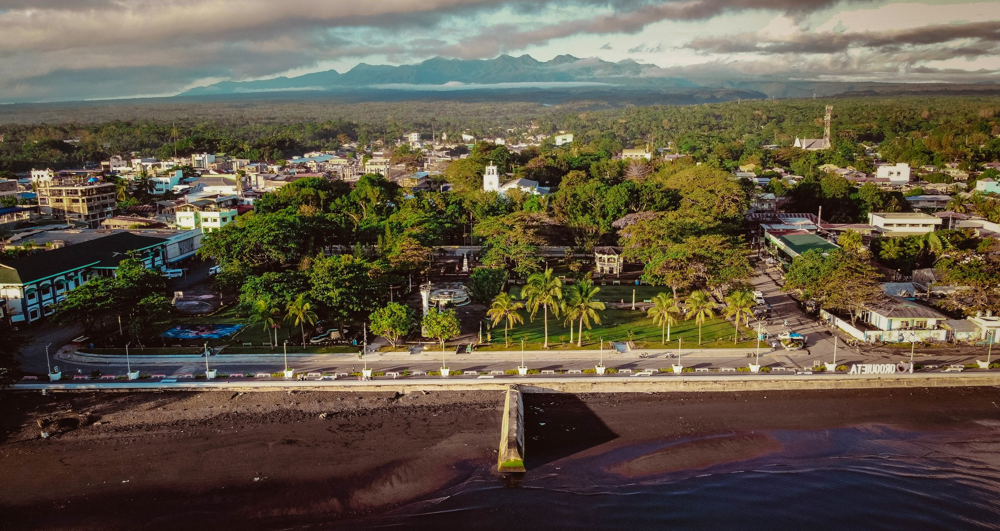

Oroquieta City Hall
The Oroquieta City Hall is an iconic landmark in the city, known for its unique architecture and historical significance.

City Plaza
Lake Duminagat is a serene and picturesque lake surrounded by lush greenery, perfect for nature lovers and outdoor enthusiasts.

Familien-Oroquieta
Offers a versatile function hall that caters to various celebrations such as weddings, debuts, reunions, and other special occasions, providing a suitable venue for memorable events.nthusiasts.

Barko-barko HOuse
Maria Cristina Falls is a stunning waterfall located near Oroquieta City, offering breathtaking views and a refreshing atmosphere.